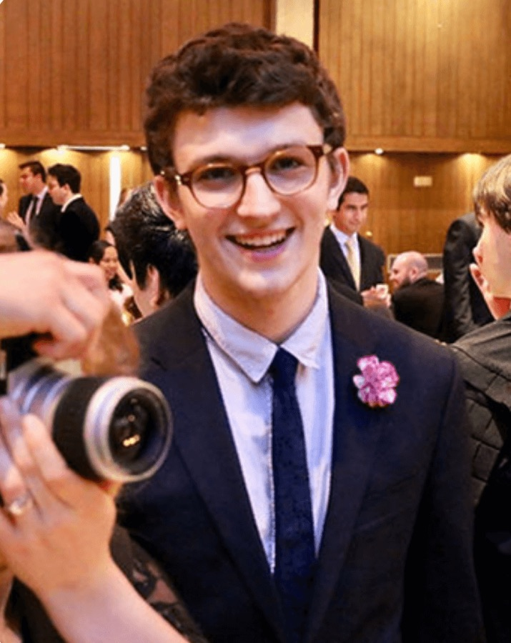

About the Fellowship
Hosted by the New York Philosophical Society, the Academy Fellowship brings together a small cohort of students for six weeks of intensive study in Midtown Manhattan. Fellows meet in person one to two times per week for extended seminar and complete 10–15 hours of independent reading between sessions.
The program runs from July 13 through August 23, 2026. It is fully funded, and students with financial need also receive a stipend to help cover materials and transportation.
Vision & Mission
The Academy Fellowship exists to cultivate tomorrow's leaders through the formation of virtue and a renewed sense of purpose. We believe education at its highest level should help answer not only how to succeed, but what one's life is for.
Our mission is to form students of outstanding character, moral courage, and a genuine love of wisdom. As Viktor Frankl wrote, "Life is never made unbearable by circumstances, but only by lack of meaning and purpose."
Meet the Faculty
The scholars and mentors helping guide students through the Fellowship.

Harrison studied Mathematics and Philosophy at the University of Chicago before beginning his career at Bridgewater Associates. Harrison leads the admissions and interview process for the Fellowship.

After studying Classics at Harvard University, Cole received a full scholarship to study Ancient Philosophy at the University of Oxford, where he taught Ancient Greek for two years after graduation. Cole is a founder of NYPS and speaks nine languages.
Contact
For questions about the Academy Fellowship, please reach out to us at fellowship@nyphilosophy.org.
The New York Philosophical Society is located in New York City. The Academy Fellowship holds seminars in Midtown Manhattan.